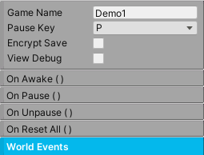

World Manager
The World Manager is in charge of running the game scripts in order. It’s also in charge of saving, pausing, resetting the game, and world events.
Each scene must contain exactly one World Manager for proper game function. Simply create a gameobject, add this component, and make sure it’s always enabled. This gameobject should never be destroyed.
Property |
|
|---|---|
Game Name |
The name of the game. Required for saving game data. |
Encrypt Save |
If enabled, this will encrypt the saved data. |
Pause Input |
A convenient button to toggle the pause state of the game. |
View Debug |
If enabled, this will show raycasts from projectiles and other game systems. |
On Awake |
A general purpose Unity Event called during Awake. This can be useful for initializing objects. |
On Pause |
The Unity Event invoked when Pause() is called. |
On Unpause |
The Unity Event invoked when Unpause() is called. |
On Reset All |
The Unity Event invoked when ResetAll() is called. |
Method |
|
|---|---|
Pause() |
This will pause the game and block player inputs. |
Unpause() |
This will unpause the game. |
PauseNoInvoke() |
This will pause the game and block player inputs without invoking onPause. |
UnpauseNoInvoke() |
This will unpause the game without invoking onUnpause. |
ResetAll() |
This will reset all the relevant scripts in the game like the Player, AI, Interactables, etc. |
Save() |
This will save every Inventory in the scene as well as World Variables, including Health. This is automatically called during OnDisable(); |
DeleteAllSavedData() |
This will delete all saved data in the game. |
World Events
Send messages so world objects can react to important world events. These events are usually created by special events in the game, like the player dying. In response, any gameobject that is registered as a listener will be alerted and react accordingly.
To create a World Event, go to Add World Event, name the event, and click the add button. The World Event is actually a scriptable object (WorldEventSO) that can be found in the AssetsFolder/Events folder. Create as many as necessary.
Once the World Event has been created, it’s going to need a triggering event and event listeners. WorldEventTrigger will be placed on the object that will trigger the event. To continue the example, when the player dies, its Health component will call WorldEventTrigger via Unity Event, and that will send an event to all the listeners. WorldEventListener is placed on any gameobject that needs to react to the event, like a UI element or an enemy AI.
World Event Trigger |
|
|---|---|
World Event |
Choose the world event to trigger. |
Trigger Event() |
When this method is called, the specified world event will be triggered. |
World Event Listener |
|
|---|---|
World Event |
Choose the world event to react to. |
On World Event |
The event that wil be invoked when the world event is triggered. |
Save
The engine implements JSON Serialization and basic encryption to save game data. Inventory and World Variables rely heavily on this. During development, disable Encrypt Save (so you can actually read the data) and check if your data persisted by going to Application.persistedDataPath. Typically, the path will look something like this:
%userprofile%\AppData\LocalLow\companyname\productname\TwoBitMachines\gameName
The option to delete all saved data is also available during development to quickly reset and test game state.